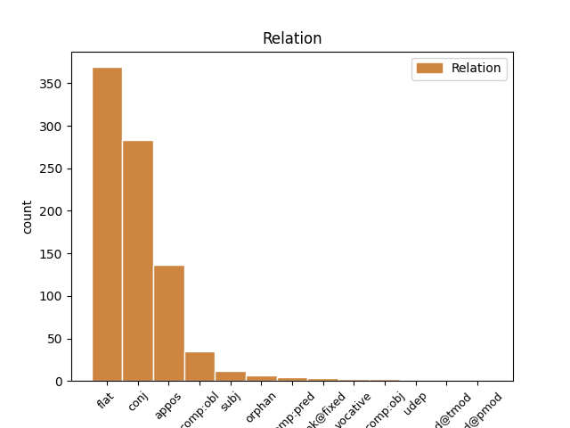
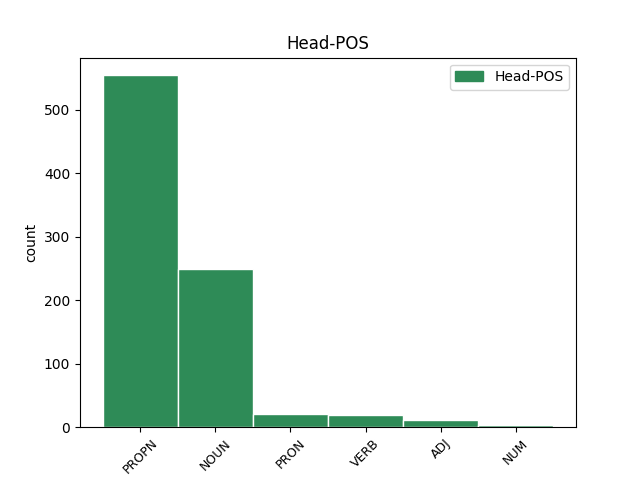
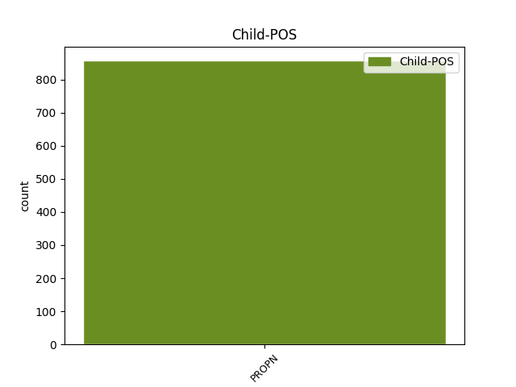

Distribution of features within this leaf



Agreement Rules sorted by frequency.
- When the dependent token is the flat multiword expression(flat) of the head token, and the dependent token is PROPN.
1 Așadar _ _ _ _ 0 _ _ _
2 , _ _ _ _ 0 _ _ _
3 Dălea Delea PROPN Npmsry Case=Acc,Nom|Definite=Def|Gender=Masc|Number=Sing 0 _ _ _
4 Dămean Damian PROPN Npmsrn Case=Acc,Nom|Definite=Ind|Gender=Masc|Number=Sing 3 flat _ SpaceAfter=No
5 , _ _ _ _ 0 _ _ _
6 Copil _ _ _ _ 0 _ _ _
7 mic _ _ _ _ 0 _ _ _
8 , _ _ _ _ 0 _ _ _
9 dară _ _ _ _ 0 _ _ _
10 viclean _ _ _ _ 0 _ _ _
11 , _ _ _ _ 0 _ _ _
12 A _ _ _ _ 0 _ _ _
13 scăpat _ _ _ _ 0 _ _ _
14 viaţa _ _ _ _ 0 _ _ _
15 sa _ _ _ _ 0 _ _ _
16 Şi- _ _ _ _ 0 _ _ _
17 a _ _ _ _ 0 _ _ _
18 omorît _ _ _ _ 0 _ _ _
19 pe _ _ _ _ 0 _ _ _
20 Sîla _ _ _ _ 0 _ _ _
21 . _ _ _ _ 0 _ _ _
1 Păntru _ _ _ _ 0 _ _ _
2 strîmbătatea _ _ _ _ 0 _ _ _
3 scrie _ _ _ _ 0 _ _ _
4 în _ _ _ _ 0 _ _ _
5 Cartea _ _ _ _ 0 _ _ _
6 Veache _ _ _ _ 0 _ _ _
7 că _ _ _ _ 0 _ _ _
8 trimise _ _ _ _ 0 _ _ _
9 Dumnădzău _ _ _ _ 0 _ _ _
10 îngerii _ _ _ _ 0 _ _ _
11 lui _ _ _ _ 0 _ _ _
12 la _ _ _ _ 0 _ _ _
13 o _ _ _ _ 0 _ _ _
14 cetatea _ _ _ _ 0 _ _ _
15 , _ _ _ _ 0 _ _ _
16 ce _ _ _ _ 0 _ _ _
17 se _ _ _ _ 0 _ _ _
18 chema _ _ _ _ 0 _ _ _
19 Sodom Sodom PROPN Npmsrn Case=Acc,Nom|Definite=Ind|Gender=Masc|Number=Sing 0 _ _ _
20 și _ _ _ _ 0 _ _ _
21 Gomor Gomor PROPN Npmsrn Case=Acc,Nom|Definite=Ind|Gender=Masc|Number=Sing 19 conj _ SpaceAfter=No
22 . _ _ _ _ 0 _ _ _
1 Din _ _ _ _ 0 _ _ _
2 Luminată _ _ _ _ 0 _ _ _
3 poruncă _ _ _ _ 0 _ _ _
4 a _ _ _ _ 0 _ _ _
5 Mării _ _ _ _ 0 _ _ _
6 sale _ _ _ _ 0 _ _ _
7 Prea _ _ _ _ 0 _ _ _
8 Înălțatului _ _ _ _ 0 _ _ _
9 nostru _ _ _ _ 0 _ _ _
10 Domn _ _ _ _ 0 _ _ _
11 Io io PRON Pp3msr Case=Acc,Nom|Gender=Masc|Number=Sing|Person=3|PronType=Prs 0 _ _ _
12 Ioann Ion PROPN Npmsrn Case=Acc,Nom|Definite=Ind|Gender=Masc|Number=Sing 11 appos _ ref=ANAFORA.3
13 Gheorghie _ _ _ _ 0 _ _ _
14 Caragea _ _ _ _ 0 _ _ _
15 , _ _ _ _ 0 _ _ _
16 Vv _ _ _ _ 0 _ _ _
17 . _ _ _ _ 0 _ _ _
1 Aceștia _ _ _ _ 0 _ _ _
2 sînt _ _ _ _ 0 _ _ _
3 carii _ _ _ _ 0 _ _ _
4 nu _ _ _ _ 0 _ _ _
5 s _ _ _ _ 0 _ _ _
6 -au _ _ _ _ 0 _ _ _
7 spurcat _ _ _ _ 0 _ _ _
8 cu _ _ _ _ 0 _ _ _
9 mueri _ _ _ _ 0 _ _ _
10 , _ _ _ _ 0 _ _ _
11 că _ _ _ _ 0 _ _ _
12 -s _ _ _ _ 0 _ _ _
13 verguri _ _ _ _ 0 _ _ _
14 ( _ _ _ _ 0 _ _ _
15 deavestăvnici _ _ _ _ 0 _ _ _
16 ) _ _ _ _ 0 _ _ _
17 ; _ _ _ _ 0 _ _ _
18 aceștea _ _ _ _ 0 _ _ _
19 mergu _ _ _ _ 0 _ _ _
20 după _ _ _ _ 0 _ _ _
21 Miel _ _ _ _ 0 _ _ _
22 , _ _ _ _ 0 _ _ _
23 vareîncătro _ _ _ _ 0 _ _ _
24 mearge _ _ _ _ 0 _ _ _
25 , _ _ _ _ 0 _ _ _
26 aceștea _ _ _ _ 0 _ _ _
27 -s _ _ _ _ 0 _ _ _
28 cumpărați cumpăra VERB Vmp--pm-p Gender=Masc|Number=Plur|Polarity=Pos|VerbForm=Part 0 _ _ _
29 den _ _ _ _ 0 _ _ _
30 oameni _ _ _ _ 0 _ _ _
31 , _ _ _ _ 0 _ _ _
32 pîrgă _ _ _ _ 0 _ _ _
33 sfîntă _ _ _ _ 0 _ _ _
34 lui _ _ _ _ 0 _ _ _
35 Dumnezău Dumnezeu PROPN Npmsrn Case=Acc,Nom|Definite=Ind|Gender=Masc|Number=Sing 28 comp:obl _ ref=IOAN_APOC_14.4
36 și _ _ _ _ 0 _ _ _
37 Mielului _ _ _ _ 0 _ _ _
38 . _ _ _ _ 0 _ _ _
1 Atunci _ _ _ _ 0 _ _ _
2 zise _ _ _ _ 0 _ _ _
3 lor _ _ _ _ 0 _ _ _
4 : _ _ _ _ 0 _ _ _
5 Dați _ _ _ _ 0 _ _ _
6 dară _ _ _ _ 0 _ _ _
7 carele _ _ _ _ 0 _ _ _
8 -s _ _ _ _ 0 _ _ _
9 a _ _ _ _ 0 _ _ _
10 împăratului _ _ _ _ 0 _ _ _
11 , _ _ _ _ 0 _ _ _
12 împăratului _ _ _ _ 0 _ _ _
13 și _ _ _ _ 0 _ _ _
14 carele _ _ _ _ 0 _ _ _
15 sînt _ _ _ _ 0 _ _ _
16 ale _ _ _ _ 0 _ _ _
17 lui _ _ _ _ 0 _ _ _
18 Dumnezău Dumnezeu PROPN Npmsrn Case=Acc,Nom|Definite=Ind|Gender=Masc|Number=Sing 0 _ _ _
19 , _ _ _ _ 0 _ _ _
20 lui _ _ _ _ 0 _ _ _
21 Dumnezău Dumnezeu PROPN Npmsrn Case=Acc,Nom|Definite=Ind|Gender=Masc|Number=Sing 18 orphan _ ref=LUCA20.25|SpaceAfter=No
22 . _ _ _ _ 0 _ _ _
1 Acest _ _ _ _ 0 _ _ _
2 liubov _ _ _ _ 0 _ _ _
3 , _ _ _ _ 0 _ _ _
4 cum _ _ _ _ 0 _ _ _
5 spune _ _ _ _ 0 _ _ _
6 Frat frate NOUN Ncmsrn Case=Acc,Nom|Definite=Ind|Gender=Masc|Number=Sing 0 _ _ _
7 Tomas Iomas PROPN Npmsrn Case=Acc,Nom|Definite=Ind|Gender=Masc|Number=Sing 6 subj _ _
8 întră _ _ _ _ 0 _ _ _
9 în _ _ _ _ 0 _ _ _
10 patru _ _ _ _ 0 _ _ _
11 lucrure _ _ _ _ 0 _ _ _
12 : _ _ _ _ 0 _ _ _
13 să _ _ _ _ 0 _ _ _
14 iubești _ _ _ _ 0 _ _ _
15 priiatnicul _ _ _ _ 0 _ _ _
16 tău _ _ _ _ 0 _ _ _
17 cu _ _ _ _ 0 _ _ _
18 inemă _ _ _ _ 0 _ _ _
19 curată _ _ _ _ 0 _ _ _
20 și _ _ _ _ 0 _ _ _
21 să _ _ _ _ 0 _ _ _
22 te _ _ _ _ 0 _ _ _
23 nevoiești _ _ _ _ 0 _ _ _
24 cumu _ _ _ _ 0 _ _ _
25 -i _ _ _ _ 0 _ _ _
26 place _ _ _ _ 0 _ _ _
27 lui _ _ _ _ 0 _ _ _
28 . _ _ _ _ 0 _ _ _
1 Doi _ _ _ _ 0 _ _ _
2 Iacovi _ _ _ _ 0 _ _ _
3 să _ _ _ _ 0 _ _ _
4 chiamă _ _ _ _ 0 _ _ _
5 frați _ _ _ _ 0 _ _ _
6 Domnului _ _ _ _ 0 _ _ _
7 : _ _ _ _ 0 _ _ _
8 unul _ _ _ _ 0 _ _ _
9 Iacov _ _ _ _ 0 _ _ _
10 , _ _ _ _ 0 _ _ _
11 iaste _ _ _ _ 0 _ _ _
12 -i _ _ _ _ 0 _ _ _
13 porecla _ _ _ _ 0 _ _ _
14 Iust _ _ _ _ 0 _ _ _
15 , _ _ _ _ 0 _ _ _
16 pre _ _ _ _ 0 _ _ _
17 carele _ _ _ _ 0 _ _ _
18 Epifanie _ _ _ _ 0 _ _ _
19 l- _ _ _ _ 0 _ _ _
20 au _ _ _ _ 0 _ _ _
21 chemat _ _ _ _ 0 _ _ _
22 Obliiaș _ _ _ _ 0 _ _ _
23 , _ _ _ _ 0 _ _ _
24 ce _ _ _ _ 0 _ _ _
25 să _ _ _ _ 0 _ _ _
26 zice _ _ _ _ 0 _ _ _
27 " _ _ _ _ 0 _ _ _
28 mut _ _ _ _ 0 _ _ _
29 " _ _ _ _ 0 _ _ _
30 ; _ _ _ _ 0 _ _ _
31 acesta _ _ _ _ 0 _ _ _
32 au _ _ _ _ 0 _ _ _
33 fost _ _ _ _ 0 _ _ _
34 din _ _ _ _ 0 _ _ _
35 numărul _ _ _ _ 0 _ _ _
36 celor _ _ _ _ 0 _ _ _
37 70 _ _ _ _ 0 _ _ _
38 de _ _ _ _ 0 _ _ _
39 ucenici _ _ _ _ 0 _ _ _
40 , _ _ _ _ 0 _ _ _
41 carele _ _ _ _ 0 _ _ _
42 nu _ _ _ _ 0 _ _ _
43 după _ _ _ _ 0 _ _ _
44 multă _ _ _ _ 0 _ _ _
45 vreame _ _ _ _ 0 _ _ _
46 după _ _ _ _ 0 _ _ _
47 suirea _ _ _ _ 0 _ _ _
48 lui _ _ _ _ 0 _ _ _
49 Hristos _ _ _ _ 0 _ _ _
50 în _ _ _ _ 0 _ _ _
51 ceriu _ _ _ _ 0 _ _ _
52 , _ _ _ _ 0 _ _ _
53 l- _ _ _ _ 0 _ _ _
54 au _ _ _ _ 0 _ _ _
55 fost _ _ _ _ 0 _ _ _
56 ales ales VERB Vmp--sm-p Gender=Masc|Number=Sing|Polarity=Pos|VerbForm=Part 0 _ _ _
57 apostolii _ _ _ _ 0 _ _ _
58 iepiscop episcop PROPN Npmsrn Case=Acc,Nom|Definite=Ind|Gender=Masc|Number=Sing 56 comp:pred _ ref=IACOB_PRED.6
59 besearicei _ _ _ _ 0 _ _ _
60 în _ _ _ _ 0 _ _ _
61 Ierosalim _ _ _ _ 0 _ _ _
62 . _ _ _ _ 0 _ _ _
1 Iară _ _ _ _ 0 _ _ _
2 Însuși _ _ _ _ 0 _ _ _
3 Dumnezău _ _ _ _ 0 _ _ _
4 și _ _ _ _ 0 _ _ _
5 Tatăl _ _ _ _ 0 _ _ _
6 nostru _ _ _ _ 0 _ _ _
7 și _ _ _ _ 0 _ _ _
8 Domnul _ _ _ _ 0 _ _ _
9 nostru _ _ _ _ 0 _ _ _
10 Iisus Iisus PROPN Npmsrn Case=Acc,Nom|Definite=Ind|Gender=Masc|Number=Sing 0 _ _ _
11 Hristos Hristos PROPN Npmsrn Case=Acc,Nom|Definite=Ind|Gender=Masc|Number=Sing 10 unk@fixed _ ref=PAVEL_SOLUN.1_3.11
12 să _ _ _ _ 0 _ _ _
13 derepteaze _ _ _ _ 0 _ _ _
14 calea _ _ _ _ 0 _ _ _
15 noastră _ _ _ _ 0 _ _ _
16 cătră _ _ _ _ 0 _ _ _
17 voi _ _ _ _ 0 _ _ _
18 . _ _ _ _ 0 _ _ _
1 Iisus Iisus PROPN Npmsrn Case=Acc,Nom|Definite=Ind|Gender=Masc|Number=Sing 0 _ _ _
2 Hristos Hristos PROPN Npmsrn Case=Acc,Nom|Definite=Ind|Gender=Masc|Number=Sing 1 comp:obj _ ref=PAVEL_EVREI_13.8|SpaceAfter=No
3 , _ _ _ _ 0 _ _ _
4 eri _ _ _ _ 0 _ _ _
5 și _ _ _ _ 0 _ _ _
6 astăzi _ _ _ _ 0 _ _ _
7 , _ _ _ _ 0 _ _ _
8 Acela _ _ _ _ 0 _ _ _
9 și _ _ _ _ 0 _ _ _
10 în _ _ _ _ 0 _ _ _
11 veaci _ _ _ _ 0 _ _ _
12 . _ _ _ _ 0 _ _ _
1 Lăsat lăsa VERB Vmp--sm-p Gender=Masc|Number=Sing|Polarity=Pos|VerbForm=Part 0 _ _ _
2 -au _ _ _ _ 0 _ _ _
3 în _ _ _ _ 0 _ _ _
4 Asiia _ _ _ _ 0 _ _ _
5 , _ _ _ _ 0 _ _ _
6 în _ _ _ _ 0 _ _ _
7 locul _ _ _ _ 0 _ _ _
8 lui _ _ _ _ 0 _ _ _
9 , _ _ _ _ 0 _ _ _
10 învățători _ _ _ _ 0 _ _ _
11 pre _ _ _ _ 0 _ _ _
12 Ignat Ignat PROPN Npmsrn Case=Acc,Nom|Definite=Ind|Gender=Masc|Number=Sing 1 mod@pmod _ ref=IOAN.1_PRED.41
13 și _ _ _ _ 0 _ _ _
14 pre _ _ _ _ 0 _ _ _
15 Policarp _ _ _ _ 0 _ _ _
16 și _ _ _ _ 0 _ _ _
17 pre _ _ _ _ 0 _ _ _
18 alți _ _ _ _ 0 _ _ _
19 bărbați _ _ _ _ 0 _ _ _
20 învățători _ _ _ _ 0 _ _ _
21 . _ _ _ _ 0 _ _ _
1 Pentr- _ _ _ _ 0 _ _ _
2 aceaia _ _ _ _ 0 _ _ _
3 să _ _ _ _ 0 _ _ _
4 huliia _ _ _ _ 0 _ _ _
5 numele nume NOUN Ncmsry Case=Acc,Nom|Definite=Def|Gender=Masc|Number=Sing 0 _ _ _
6 lui _ _ _ _ 0 _ _ _
7 Dumnezău Dumnezeu PROPN Npmsrn Case=Acc,Nom|Definite=Ind|Gender=Masc|Number=Sing 5 mod@tmod _ ref=IOAN.1_PRED.60
8 între _ _ _ _ 0 _ _ _
9 ei _ _ _ _ 0 _ _ _
10 ; _ _ _ _ 0 _ _ _
11 văzînd _ _ _ _ 0 _ _ _
12 aceastia _ _ _ _ 0 _ _ _
13 le _ _ _ _ 0 _ _ _
14 scrie _ _ _ _ 0 _ _ _
15 împrotivă _ _ _ _ 0 _ _ _
16 și _ _ _ _ 0 _ _ _
17 le _ _ _ _ 0 _ _ _
18 arată _ _ _ _ 0 _ _ _
19 că _ _ _ _ 0 _ _ _
20 nu _ _ _ _ 0 _ _ _
21 poate _ _ _ _ 0 _ _ _
22 fi _ _ _ _ 0 _ _ _
23 cine _ _ _ _ 0 _ _ _
24 are _ _ _ _ 0 _ _ _
25 împreunare _ _ _ _ 0 _ _ _
26 cu _ _ _ _ 0 _ _ _
27 Dumnezău _ _ _ _ 0 _ _ _
28 în _ _ _ _ 0 _ _ _
29 lumina _ _ _ _ 0 _ _ _
30 credințeei _ _ _ _ 0 _ _ _
31 , _ _ _ _ 0 _ _ _
32 să _ _ _ _ 0 _ _ _
33 n- _ _ _ _ 0 _ _ _
34 aibă _ _ _ _ 0 _ _ _
35 viiață _ _ _ _ 0 _ _ _
36 sfîntă _ _ _ _ 0 _ _ _
37 și _ _ _ _ 0 _ _ _
38 fapte _ _ _ _ 0 _ _ _
39 bune _ _ _ _ 0 _ _ _
40 . _ _ _ _ 0 _ _ _
Disagree Examples:
1 Și _ _ _ _ 0 _ _ _
2 cînd _ _ _ _ 0 _ _ _
3 să _ _ _ _ 0 _ _ _
4 apropiară _ _ _ _ 0 _ _ _
5 cătră _ _ _ _ 0 _ _ _
6 Ierosalim _ _ _ _ 0 _ _ _
7 , _ _ _ _ 0 _ _ _
8 la _ _ _ _ 0 _ _ _
9 Vitfaghi Vitfaghi PROPN Npmprn Case=Acc,Nom|Definite=Ind|Gender=Masc|Number=Plur 0 _ _ _
10 și _ _ _ _ 0 _ _ _
11 Vitania Betania PROPN Npfsry Case=Acc,Nom|Definite=Def|Gender=Fem|Number=Sing 9 conj _ ref=MARC11.1|SpaceAfter=No
12 , _ _ _ _ 0 _ _ _
13 cătră _ _ _ _ 0 _ _ _
14 Muntele _ _ _ _ 0 _ _ _
15 Maslinilor _ _ _ _ 0 _ _ _
16 , _ _ _ _ 0 _ _ _
17 trimise _ _ _ _ 0 _ _ _
18 doi _ _ _ _ 0 _ _ _
19 den _ _ _ _ 0 _ _ _
20 ucenicii _ _ _ _ 0 _ _ _
21 lui _ _ _ _ 0 _ _ _
22 . _ _ _ _ 0 _ _ _
1 Atunci _ _ _ _ 0 _ _ _
2 unii _ _ _ _ 0 _ _ _
3 sculîndu- _ _ _ _ 0 _ _ _
4 să _ _ _ _ 0 _ _ _
5 mărturisiia mărturisi NOUN Ncfsry Case=Acc,Nom|Definite=Def|Gender=Fem|Number=Sing 0 _ _ _
6 strîmbu strâmb PROPN Npmsrn Case=Acc,Nom|Definite=Ind|Gender=Masc|Number=Sing 5 udep _ ref=MARC14.57
7 spre _ _ _ _ 0 _ _ _
8 El _ _ _ _ 0 _ _ _
9 , _ _ _ _ 0 _ _ _
10 zicînd _ _ _ _ 0 _ _ _
11 : _ _ _ _ 0 _ _ _
1 Și _ _ _ _ 0 _ _ _
2 și _ _ _ _ 0 _ _ _
3 aduse aduce VERB Vmp--sf-p--o Case=Dat,Gen|Gender=Fem|Number=Sing|Polarity=Pos|VerbForm=Part 0 _ _ _
4 a _ _ _ _ 0 _ _ _
5 minte _ _ _ _ 0 _ _ _
6 Pătru Petru PROPN Npmsrn Case=Acc,Nom|Definite=Ind|Gender=Masc|Number=Sing 3 subj _ ref=MARC14.72
7 de _ _ _ _ 0 _ _ _
8 cuvintele _ _ _ _ 0 _ _ _
9 carele _ _ _ _ 0 _ _ _
10 -i _ _ _ _ 0 _ _ _
11 zise _ _ _ _ 0 _ _ _
12 lui _ _ _ _ 0 _ _ _
13 Iisus _ _ _ _ 0 _ _ _
14 , _ _ _ _ 0 _ _ _
15 că _ _ _ _ 0 _ _ _
16 mainte _ _ _ _ 0 _ _ _
17 de _ _ _ _ 0 _ _ _
18 ce _ _ _ _ 0 _ _ _
19 va _ _ _ _ 0 _ _ _
20 cînta _ _ _ _ 0 _ _ _
21 cocoșul _ _ _ _ 0 _ _ _
22 de _ _ _ _ 0 _ _ _
23 doao _ _ _ _ 0 _ _ _
24 ori _ _ _ _ 0 _ _ _
25 , _ _ _ _ 0 _ _ _
26 trei _ _ _ _ 0 _ _ _
27 ori _ _ _ _ 0 _ _ _
28 te _ _ _ _ 0 _ _ _
29 veri _ _ _ _ 0 _ _ _
30 lepăda _ _ _ _ 0 _ _ _
31 de _ _ _ _ 0 _ _ _
32 mine _ _ _ _ 0 _ _ _
33 . _ _ _ _ 0 _ _ _
1 Zaharia Zaharia PROPN Npmsry Case=Acc,Nom|Definite=Def|Gender=Masc|Number=Sing 0 _ _ _
2 și _ _ _ _ 0 _ _ _
3 Elisafta Elisafta PROPN Npfsry Case=Acc,Nom|Definite=Def|Gender=Fem|Number=Sing 1 conj _ ref=LUCA1.5.content|SpaceAfter=No
4 . _ _ _ _ 0 _ _ _
1 Iară _ _ _ _ 0 _ _ _
2 muiarea _ _ _ _ 0 _ _ _
3 lui _ _ _ _ 0 _ _ _
4 era _ _ _ _ 0 _ _ _
5 den _ _ _ _ 0 _ _ _
6 featele _ _ _ _ 0 _ _ _
7 lui _ _ _ _ 0 _ _ _
8 Aaron _ _ _ _ 0 _ _ _
9 și _ _ _ _ 0 _ _ _
10 numele nume NOUN Ncmsry Case=Acc,Nom|Definite=Def|Gender=Masc|Number=Sing 0 _ _ _
11 ei _ _ _ _ 0 _ _ _
12 , _ _ _ _ 0 _ _ _
13 Elisafta Elisafta PROPN Npfsry Case=Acc,Nom|Definite=Def|Gender=Fem|Number=Sing 10 appos _ ref=LUCA1.5|SpaceAfter=No
14 . _ _ _ _ 0 _ _ _